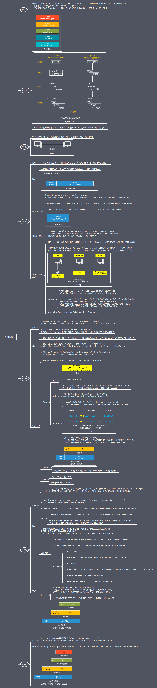
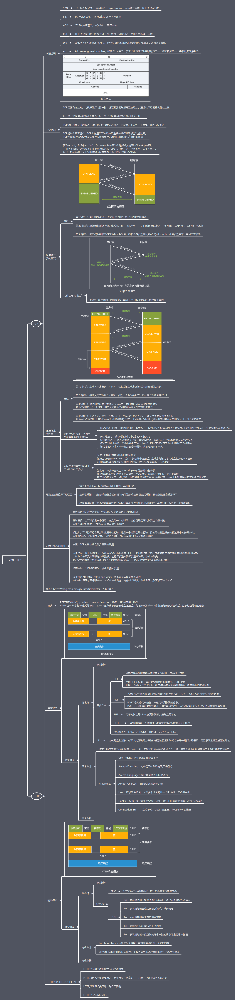

目录
你已经读了
0
%
1.
网络层
2.
运输层
3.
数据链路层
4.
下面是一些别人整理得比较好的脑图
Rasang's Blog
长路漫漫，唯剑作伴。
Home
Archives
Tags
Categories
About
搜索
计算机网络复习
发表于 2019-06-15
|
更新于 2019-08-23
|
课程
计算机网络
字数总计:
72
|
阅读时长: 1 分钟
|
阅读量:
水了一学期的计算机网络也该开始复习了，先把网络层和运输层复习了吧，其他后面再复习
网络层
运输层
数据链路层
下面是一些别人整理得比较好的脑图
互联网协议

TCP与HTTP

文章作者:
Rasang
文章链接:
https://rasang.site/2019/06/15/计算机网络复习脑图/
版权声明:
本博客所有文章除特别声明外，均采用
CC BY-NC-SA 4.0
许可协议。转载请注明来自
Rasang's Blog
！
脑图
计算机网络
打赏
微信
支付寶
上一篇
Git学习笔记
下一篇
攻防世界部分web wp
繁
目录
1.
网络层
2.
运输层
3.
数据链路层
4.
下面是一些别人整理得比较好的脑图
本地搜索
由
hexo-generator-search
提供支持